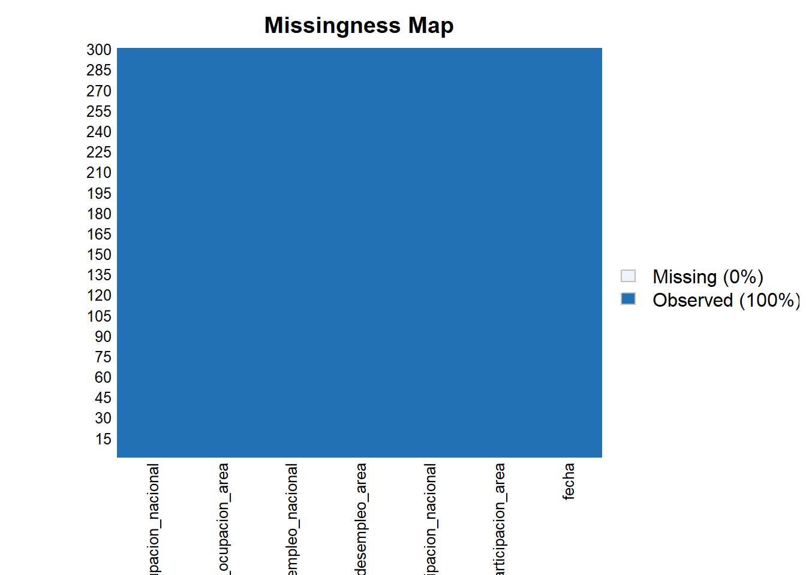
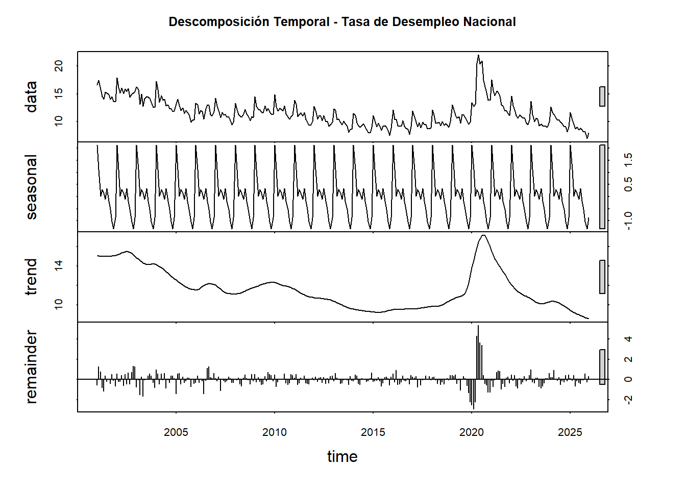

Bookdown R Visualización de datos
1 Introduccion
El mercado laboral constituye uno de los principales indicadores del desempeño económico de un país, ya que refleja la capacidad de la economía para generar empleo y absorber la fuerza de trabajo disponible. En Colombia, el seguimiento continuo de indicadores laborales permite analizar la dinámica entre la población económicamente activa, los niveles de ocupación y el desempleo, proporcionando información clave para la formulación de políticas públicas y la toma de decisiones económicas.
El presente proyecto tiene como objetivo analizar el comportamiento del mercado laboral colombiano a partir de los indicadores mensuales publicados por el Banco de la República y producidos por el Departamento Administrativo Nacional de Estadística (DANE), correspondientes al período comprendido entre enero de 2001 y diciembre de 2025. Dichos indicadores se expresan en términos porcentuales y presentan una periodicidad mensual, lo que permite estudiar la evolución temporal del mercado laboral con un alto nivel de detalle.
El conjunto de datos empleado incluye variables fundamentales como la tasa global de participación, la tasa de ocupación y la tasa de desempleo, tanto para el total nacional como para el agregado de las trece principales áreas metropolitanas del país. La tasa global de participación mide la proporción de la población en edad de trabajar que forma parte de la fuerza laboral, reflejando la presión ejercida sobre el mercado de trabajo. Por su parte, la tasa de ocupación representa la relación entre la población ocupada y la población en edad de trabajar, mientras que la tasa de desempleo cuantifica el porcentaje de personas desocupadas dentro de la fuerza laboral total.
Dentro de este conjunto de indicadores, se selecciona como variable objetivo la tasa de desempleo total nacional, debido a que este indicador sintetiza el estado general del mercado laboral y representa el resultado del equilibrio entre la oferta y la demanda de trabajo en la economía colombiana.
A partir de esta variable, se busca responder la siguiente pregunta de investigación:
¿Cómo ha evolucionado la tasa de desempleo en Colombia a lo largo del tiempo y qué relación presenta con otros indicadores del mercado laboral como la tasa de ocupación y la tasa global de participación?
1.1 EDA
- Carga de datos:
library(readxl)
MLC <- read_excel("C:/Users/boolean/Downloads/MLC.xlsx",
sheet = "Series de datos", col_types = c("date",
"numeric", "numeric", "numeric",
"numeric", "numeric", "numeric"))
head(MLC)## # A tibble: 6 × 7
## fecha tasa_global_participacion_area tasa_global_participacion…¹
## <dttm> <dbl> <dbl>
## 1 2001-01-31 00:00:00 70.0 69.1
## 2 2001-02-28 00:00:00 70.2 68.9
## 3 2001-03-31 00:00:00 69.1 68.4
## 4 2001-04-30 00:00:00 67.7 65.2
## 5 2001-05-31 00:00:00 68.1 65.4
## 6 2001-06-30 00:00:00 68.7 66.3
## # ℹ abbreviated name: ¹tasa_global_participacion_nacional
## # ℹ 4 more variables: tasa_desempleo_area <dbl>, tasa_desempleo_nacional <dbl>,
## # tasa_ocupacion_area <dbl>, tasa_ocupacion_nacional <dbl>Se realiza una inspección inicial de los datos del dataset:
## [1] "fecha" "tasa_global_participacion_area"
## [3] "tasa_global_participacion_nacional" "tasa_desempleo_area"
## [5] "tasa_desempleo_nacional" "tasa_ocupacion_area"
## [7] "tasa_ocupacion_nacional"## tibble [300 × 7] (S3: tbl_df/tbl/data.frame)
## $ fecha : POSIXct[1:300], format: "2001-01-31" "2001-02-28" ...
## $ tasa_global_participacion_area : num [1:300] 70 70.2 69.1 67.7 68.1 ...
## $ tasa_global_participacion_nacional: num [1:300] 69.1 68.9 68.4 65.2 65.4 ...
## $ tasa_desempleo_area : num [1:300] 20.7 19.6 19.1 17.6 17.8 ...
## $ tasa_desempleo_nacional : num [1:300] 16.6 17.4 15.8 14.5 14 ...
## $ tasa_ocupacion_area : num [1:300] 55.5 56.5 55.9 55.8 56 ...
## $ tasa_ocupacion_nacional : num [1:300] 57.6 56.9 57.6 55.8 56.2 ...## [1] 300 7## fecha tasa_global_participacion_area
## Min. :2001-01-31 00:00:00 Min. :55.09
## 1st Qu.:2007-04-22 12:00:00 1st Qu.:66.57
## Median :2013-07-15 12:00:00 Median :67.95
## Mean :2013-07-15 18:38:24 Mean :67.76
## 3rd Qu.:2019-10-07 18:00:00 3rd Qu.:69.47
## Max. :2025-12-31 00:00:00 Max. :72.15
## tasa_global_participacion_nacional tasa_desempleo_area tasa_desempleo_nacional
## Min. :53.45 Min. : 7.27 Min. : 7.020
## 1st Qu.:64.09 1st Qu.:10.45 1st Qu.: 9.735
## Median :66.14 Median :11.73 Median :11.193
## Mean :65.74 Mean :12.63 Mean :11.612
## 3rd Qu.:67.48 3rd Qu.:14.02 3rd Qu.:12.909
## Max. :70.62 Max. :25.79 Max. :21.972
## tasa_ocupacion_area tasa_ocupacion_nacional
## Min. :41.66 Min. :42.50
## 1st Qu.:57.71 1st Qu.:56.84
## Median :59.59 Median :58.31
## Mean :59.22 Mean :58.12
## 3rd Qu.:61.13 3rd Qu.:59.96
## Max. :64.61 Max. :64.01Verificamos que no hayan datos faltantes ni casillas vacias:
## fecha tasa_global_participacion_area
## 0 0
## tasa_global_participacion_nacional tasa_desempleo_area
## 0 0
## tasa_desempleo_nacional tasa_ocupacion_area
## 0 0
## tasa_ocupacion_nacional
## 0En efecto, no encontramos ningún NA. Esto nos facilita el trabajar con los datos que la limpieza no debe ser tan rigurosa. Otra forma de verlo sería:
## Loading required package: Rcpp## ##
## ## Amelia II: Multiple Imputation
## ## (Version 1.8.3, built: 2024-11-07)
## ## Copyright (C) 2005-2026 James Honaker, Gary King and Matthew Blackwell
## ## Refer to http://gking.harvard.edu/amelia/ for more information
## #### Warning: Unknown or uninitialised column: `arguments`.
## Unknown or uninitialised column: `arguments`.## Warning: Unknown or uninitialised column: `imputations`.
1.2 Analisis de la variable tasa_desempleo_nacional.
Consideremos el resumen de tasa_desempleo_nacional (objetivo):
MLC %>%
summarise(
n = length(tasa_desempleo_nacional),
media = mean(tasa_desempleo_nacional),
ds = sd(tasa_desempleo_nacional),
mediana = median(tasa_desempleo_nacional),
minimo = min(tasa_desempleo_nacional),
maximo = max(tasa_desempleo_nacional),
Q1 = quantile(tasa_desempleo_nacional, 0.25),
Q3 = quantile(tasa_desempleo_nacional, 0.75),
IQR = IQR(tasa_desempleo_nacional)
)## # A tibble: 1 × 9
## n media ds mediana minimo maximo Q1 Q3 IQR
## <int> <dbl> <dbl> <dbl> <dbl> <dbl> <dbl> <dbl> <dbl>
## 1 300 11.6 2.45 11.2 7.02 22.0 9.74 12.9 3.17La variable tasa_desempleo_nacional fue analizada a partir de 300 observaciones. Se obtuvo una media de 11.61247 que se refleja como la tasa de desempleo nacional que se refleja como porcentaje, donde la mitad de la muestra se encuentr por debajo de 11.19275. El minimo registrado fue de 7.02, lo que indica que en una fecha en especifico se presentó una tasa de desempleo menor a la media. Por su parte el maximo fue de 21.972, lo cual refleja una tasa de desempleo alta en una fecha en especifico.
Veamos un histograma:
library(ggplot2)
media_des <- mean(MLC$tasa_desempleo_nacional, na.rm = TRUE)
mediana_des <- median(MLC$tasa_desempleo_nacional, na.rm = TRUE)
ggplot(MLC, aes(x = tasa_desempleo_nacional)) +
geom_histogram(
aes(y = ..density..),
bins = 30,
fill = "skyblue",
color = "black",
alpha = 0.7
) +
geom_density(
color = "red",
linewidth = 1.2
) +
geom_vline(
xintercept = media_des,
color = "blue",
linetype = "dashed",
linewidth = 1
) +
geom_vline(
xintercept = mediana_des,
color = "darkgreen",
linetype = "dashed",
linewidth = 1
) +
labs(
title = "Distribución de la Tasa de Desempleo Nacional en Colombia",
subtitle = "Histograma con densidad, media y mediana",
x = "Tasa de desempleo nacional (%)",
y = "Densidad"
) +
theme_minimal()## Warning: The dot-dot notation (`..density..`) was deprecated in ggplot2 3.4.0.
## ℹ Please use `after_stat(density)` instead.
## This warning is displayed once per session.
## Call `lifecycle::last_lifecycle_warnings()` to see where this warning was
## generated.
El histograma presenta la distribución de frecuencias de la tasa de desempleo nacional. En el eje horizontal se ubican los intervalos de la variable (10, 15 y 20), mientras que el eje vertical muestra la frecuencia de observaciones en cada rango, con un máximo de 20.
La altura de las barras permite identificar la concentración de los datos. Si las frecuencias más altas se encuentran en los intervalos inferiores (cercanos a 10), predominan tasas de desempleo bajas. Por el contrario, si se concentran en valores superiores (cercanos a 20), predominan tasas altas. Este análisis visual facilita la comprensión del comportamiento del desempleo en el período estudiado y constituye una base descriptiva fundamental para estudios económicos y sociales.
- Realicemos un grafico de caja y bigote:
ggplot(MLC, aes(y = tasa_desempleo_nacional)) +
geom_boxplot(
fill = "skyblue",
color = "black",
width = 0.3,
outlier.color = "red",
outlier.size = 2
) +
labs(
title = "Diagrama de Caja y Bigotes",
subtitle = "Tasa de Desempleo Nacional en Colombia",
y = "Tasa de desempleo nacional (%)",
x = ""
) +
theme_minimal()
Se identifican tres puntos rojos fuera de este rango, lo que indica la presencia de valores atípicos o outliers: uno en el 20%, dos en el 15% y uno en el 10%. Estos valores se desvían del comportamiento general de la serie, posiblemente reflejando periodos con condiciones económicas excepcionales, como crisis o recuperaciones atípicas. Se reflejan unos outliers, pero al ser el dataset economico se mantendrá por ahora.
Veamos donde se encuentran:
Q1 <- quantile(MLC$tasa_desempleo_nacional, 0.25, na.rm = TRUE)
Q3 <- quantile(MLC$tasa_desempleo_nacional, 0.75, na.rm = TRUE)
IQR_val <- Q3 - Q1
lim_inf <- Q1 - 1.5 * IQR_val
lim_sup <- Q3 + 1.5 * IQR_val
MLC <- MLC %>%
mutate(
outlier = ifelse(
tasa_desempleo_nacional < lim_inf |
tasa_desempleo_nacional > lim_sup,
"Outlier",
"Normal"
)
)
ggplot(MLC, aes(x = fecha, y = tasa_desempleo_nacional)) +
geom_line(color = "steelblue", linewidth = 1) +
geom_point(
aes(color = outlier),
size = 2
) +
scale_color_manual(
values = c("Normal" = "black",
"Outlier" = "red")
) +
labs(
title = "Serie Temporal de la Tasa de Desempleo Nacional",
subtitle = "Identificación de valores atípicos",
x = "Fecha",
y = "Tasa de desempleo (%)",
color = ""
) +
theme_minimal()
La serie temporal evidencia la evolución del desempleo en Colombia a lo largo del tiempo. Los valores atípicos identificados corresponden a períodos de choque económico significativo, reflejando incrementos excepcionales en la tasa de desempleo. Estos valores no fueron eliminados debido a que representan dinámicas reales del mercado laboral.
1.3 Analisis de las variables caracteristicas:
MLC %>%
summarise(
n = length(tasa_global_participacion_area),
media = mean(tasa_global_participacion_area),
ds = sd(tasa_global_participacion_area),
mediana = median(tasa_global_participacion_area),
minimo = min(tasa_global_participacion_area),
maximo = max(tasa_global_participacion_area),
Q1 = quantile(tasa_global_participacion_area, 0.25),
Q3 = quantile(tasa_global_participacion_area, 0.75),
IQR = IQR(tasa_global_participacion_area)) %>%
mutate(variable = "tasa_global_participacion_area") -> var_num_tgpa
MLC %>%
summarise(
n = length(tasa_global_participacion_nacional),
media = mean(tasa_global_participacion_nacional),
ds = sd(tasa_global_participacion_nacional),
mediana = median(tasa_global_participacion_nacional),
minimo = min(tasa_global_participacion_nacional),
maximo = max(tasa_global_participacion_nacional),
Q1 = quantile(tasa_global_participacion_nacional, 0.25),
Q3 = quantile(tasa_global_participacion_nacional, 0.75),
IQR = IQR(tasa_global_participacion_nacional)) %>%
mutate(variable = "tasa_global_participacion_nacional") -> var_num_tgpn
MLC %>%
summarise(
n = length(tasa_desempleo_area),
media = mean(tasa_desempleo_area),
ds = sd(tasa_desempleo_area),
mediana = median(tasa_desempleo_area),
minimo = min(tasa_desempleo_area),
maximo = max(tasa_desempleo_area),
Q1 = quantile(tasa_desempleo_area, 0.25),
Q3 = quantile(tasa_desempleo_area, 0.75),
IQR = IQR(tasa_desempleo_area)) %>%
mutate(variable = "tasa_desempleo_area")-> var_num_tsa
MLC %>%
summarise(
n = length(tasa_ocupacion_area),
media = mean(tasa_ocupacion_area),
ds = sd(tasa_ocupacion_area),
mediana = median(tasa_ocupacion_area),
minimo = min(tasa_ocupacion_area),
maximo = max(tasa_ocupacion_area),
Q1 = quantile(tasa_ocupacion_area, 0.25),
Q3 = quantile(tasa_ocupacion_area, 0.75),
IQR = IQR(tasa_ocupacion_area)) %>%
mutate(variable = "tasa_ocupacion_area") -> var_num_toa
MLC %>%
summarise(
n = length(tasa_ocupacion_nacional),
media = mean(tasa_ocupacion_nacional),
ds = sd(tasa_ocupacion_nacional),
mediana = median(tasa_ocupacion_nacional),
minimo = min(tasa_ocupacion_nacional),
maximo = max(tasa_ocupacion_nacional),
Q1 = quantile(tasa_ocupacion_nacional, 0.25),
Q3 = quantile(tasa_ocupacion_nacional, 0.75),
IQR = IQR(tasa_ocupacion_nacional)) %>%
mutate(variable = "tasa_ocupacion_nacional") -> var_num_ton
bind_rows(var_num_tgpa, var_num_tgpn, var_num_tsa, var_num_toa, var_num_ton ) %>%
select(variable, everything())## # A tibble: 5 × 10
## variable n media ds mediana minimo maximo Q1 Q3 IQR
## <chr> <int> <dbl> <dbl> <dbl> <dbl> <dbl> <dbl> <dbl> <dbl>
## 1 tasa_global_partici… 300 67.8 2.22 68.0 55.1 72.1 66.6 69.5 2.90
## 2 tasa_global_partici… 300 65.7 2.35 66.1 53.4 70.6 64.1 67.5 3.40
## 3 tasa_desempleo_area 300 12.6 3.15 11.7 7.27 25.8 10.4 14.0 3.57
## 4 tasa_ocupacion_area 300 59.2 3.10 59.6 41.7 64.6 57.7 61.1 3.42
## 5 tasa_ocupacion_naci… 300 58.1 2.85 58.3 42.5 64.0 56.8 60.0 3.12MLC_long <- MLC %>%
select(
tasa_global_participacion_area,
tasa_global_participacion_nacional,
tasa_desempleo_area,
tasa_ocupacion_area,
tasa_ocupacion_nacional
) %>%
pivot_longer(
cols = everything(),
names_to = "variable",
values_to = "valor"
)
ggplot(MLC_long, aes(y = valor)) +
geom_boxplot(
fill = "skyblue",
color = "black",
outlier.color = "red"
) +
facet_wrap(~variable, scales = "free") +
labs(
title = "Diagramas de Caja por Indicador del Mercado Laboral",
y = "Valor (%)",
x = ""
) +
theme_minimal()
Al analizar los boxplots presentados, observamos que la tasa de desempleo a nivel de área es el indicador con mayor variabilidad y valores más extremos, con una mediana cercana al 10% y un rango que se extiende hasta cerca del 20%, lo que refleja disparidades significativas en el desempleo local. En contraste, los indicadores de tasa de ocupación y tasa global de participación, tanto a nivel de área como nacional, presentan medianas centradas en cero y una dispersión mucho más contenida. Destaca especialmente que las versiones nacionales de estos indicadores muestran cajas más estrechas y bigotes más cortos que sus contrapartes de área, lo que sugiere que, a escala nacional, el mercado laboral tiende a ser más estable y homogéneo, mientras que a nivel local se experimentan fluctuaciones más pronunciadas y contextos laborales más diversos.
1.4 Analisis bivariado.
## corrplot 0.95 loadedMLC_corr <- MLC %>%
select(
tasa_global_participacion_area,
tasa_global_participacion_nacional,
tasa_desempleo_area,
tasa_desempleo_nacional,
tasa_ocupacion_area,
tasa_ocupacion_nacional
)
matriz_cor <- cor(MLC_corr,
use = "complete.obs",
method = "pearson")
corrplot(
matriz_cor,
method = "color",
type = "upper",
addCoef.col = "black",
tl.col = "black",
tl.srt = 45,
number.cex = 0.7
)
Al examinar la matriz de correlaciones, se identifican relaciones clave en el mercado laboral. Destaca una alta correlación positiva entre las tasas de desempleo de área y nacional (0.96), así como entre las tasas de ocupación de ambos niveles (0.94), lo que indica que los comportamientos locales y nacionales tienden a moverse de manera sincronizada. Asimismo, la participación global muestra una fuerte consistencia entre el área y la nación (0.95). Por otro lado, se observa una correlación negativa significativa entre la tasa de desempleo y la tasa de ocupación (aproximadamente -0.80 en ambos niveles), lo que refleja la relación inversa esperada: a mayor desempleo, menor ocupación. Finalmente, la participación global presenta una correlación moderada a alta con la ocupación (alrededor de 0.80), sugiriendo que una mayor participación en el mercado laboral se asocia con mayores niveles de ocupación, aunque su relación con el desempleo es débil y negativa.
Tomemos las variables en el grafico de dispersion como:
- Tasa de ocupacion nacional (TON)
- Tasa de desempleo nacional (TDN)
- Tasa global de participación nacional (TGPN)
- Tasa de desempleo area (TDA)
library(ggplot2)
library(patchwork)
g1 <- ggplot(MLC,
aes(x = tasa_ocupacion_nacional,
y = tasa_desempleo_nacional)) +
geom_point(color = "steelblue", alpha = 0.6) +
geom_smooth(method = "lm", se = FALSE, color = "red") +
labs(
title = "Desempleo vs Ocupación Nacional",
x = "TON",
y = "TDN"
) +
theme_minimal()
g2 <- ggplot(MLC,
aes(x = tasa_global_participacion_nacional,
y = tasa_desempleo_nacional)) +
geom_point(color = "darkgreen", alpha = 0.6) +
geom_smooth(method = "lm", se = FALSE, color = "red") +
labs(
title = "Desempleo vs Participación Nacional",
x = "TGPN",
y = "TDN"
) +
theme_minimal()
g3 <- ggplot(MLC,
aes(x = tasa_desempleo_area,
y = tasa_desempleo_nacional)) +
geom_point(color = "purple", alpha = 0.6) +
geom_smooth(method = "lm", se = FALSE, color = "red") +
labs(
title = "Desempleo Área vs Nacional",
x = "TDA",
y = "TDN"
) +
theme_minimal()
g1 / g2 / g3## `geom_smooth()` using formula = 'y ~ x'
## `geom_smooth()` using formula = 'y ~ x'
## `geom_smooth()` using formula = 'y ~ x'
Al analizar las relaciones gráficas entre los indicadores del mercado laboral, se observan patrones claros y consistentes con la teoría económica. En el primer gráfico, Desempleo vs Ocupación Nacional, se aprecia una clara relación inversa: a medida que aumenta la tasa de ocupación (TON), la tasa de desempleo nacional (TDN) tiende a disminuir, con puntos que oscilan entre aproximadamente 45% y 65% de ocupación y desempleo que va del 20% a valores cercanos a cero. En el segundo gráfico, Desempleo vs Participación Nacional, la relación es menos pronunciada pero también negativa: cuando la participación global (TGPN) aumenta —ubicándose entre 55% y 70%—, el desempleo tiende a reducirse, aunque con mayor dispersión. Finalmente, el gráfico Desempleo Área vs Nacional confirma una fuerte correlación positiva, donde los puntos se alinean casi perfectamente en una tendencia lineal ascendente, indicando que el comportamiento del desempleo a nivel local replica fielmente el comportamiento nacional.
Vamos a analizar la variable objetivo respecto a la ocupación donde se refleja:
- Cuando ocupación sube → desempleo baja.
- Comportamiento inverso del mercado laboral.
library(tidyr)
library(ggplot2)
library(dplyr)
MLC_temp1 <- MLC %>%
select(
fecha,
tasa_desempleo_nacional,
tasa_ocupacion_nacional
) %>%
pivot_longer(
-fecha,
names_to = "variable",
values_to = "valor"
)
ggplot(MLC_temp1,
aes(x = fecha, y = valor, color = variable)) +
geom_line(linewidth = 1) +
labs(
title = "Evolución Temporal: Desempleo vs Ocupación Nacional",
x = "Fecha",
y = "Tasa (%)",
color = "Indicador"
) +
theme_minimal()
Al observar la evolución temporal del mercado laboral nacional entre los años 2000 y 2025, se identifican dinámicas inversas y claramente definidas entre el desempleo y la ocupación. La tasa de desempleo nacional (línea azul) muestra picos pronunciados en periodos de crisis especialmente alrededor de 2010 y nuevamente cerca de 2020, coincidiendo con caídas simultáneas en la tasa de ocupación nacional (línea roja), lo que refleja la sensibilidad del empleo ante choques económicos. En contraste, en los periodos de recuperación, la ocupación aumenta mientras el desempleo desciende, manteniendo consistentemente la relación inversa esperada entre ambos indicadores. Esta gráfica valida visualmente la correlación negativa observada en análisis anteriores y permite identificar con claridad los momentos de mayor tensión en el mercado laboral a lo largo de las últimas dos décadas.
Por ultimo hagamos la descomposición temporal que nos permite identificar los componentes estructurales de la tasa de desempleo nacional:
library(dplyr)
library(forecast)
ts_desempleo <- ts(
MLC$tasa_desempleo_nacional,
start = c(year(min(MLC$fecha)),
month(min(MLC$fecha))),
frequency = 12
)
descomp <- stl(ts_desempleo, s.window = "periodic")
plot(descomp,
main = "Descomposición Temporal - Tasa de Desempleo Nacional")
Al aplicar la descomposición temporal a la tasa de desempleo nacional, podemos distinguir claramente sus tres componentes fundamentales. El componente de tendencia (trend) revela un comportamiento cíclico de largo plazo: se observa un descenso sostenido desde mediados de la década de 2000 hasta aproximadamente 2015, seguido de una tendencia alcista que se acelera hacia 2020, reflejando el impacto de crisis económicas recientes. Por su parte, el componente estacional (seasonal) muestra fluctuaciones regulares y predecibles a lo largo del año, con amplitudes que oscilan entre -1.0 y 1.0, lo que indica que el desempleo sigue patrones repetitivos asociados a dinámicas estacionales del mercado laboral, como periodos de contratación o despidos en ciertas épocas del año. Finalmente, el gráfico superior (data) presenta la serie original, que combina ambos efectos, permitiendo visualizar cómo la tendencia y la estacionalidad interactúan para generar los valores reales observados en cada periodo.